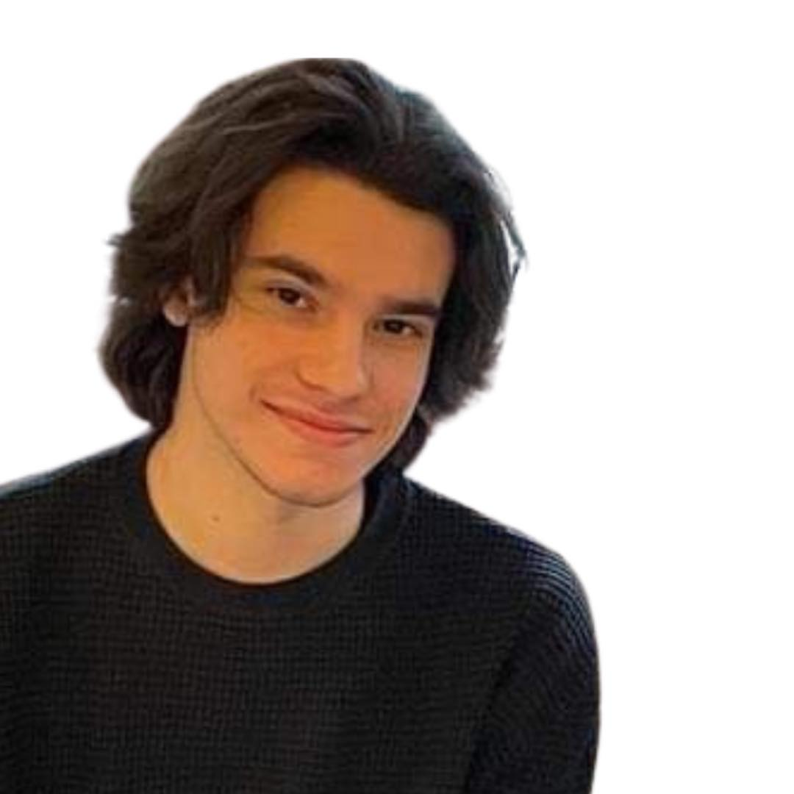

Marko Jovanovic
Electrical Engineering Student
Summary
A motivated and ambitious electrical engineering student. Strong analytical and problem-solving skills, with a passion for
web development and app programming. Seeking a challenging role in a dynamic organization
where I can contribute my skills and continue to learn and grow.
Education
-
2021 - Present
School of Electrical and Computer Engineering -
Academy of Technical and Art Applied Studies
Electronics and Telecommunications
-
2019 - Present
School of Electrical Engineering - University of Belgrade
Telecommunications and Information Technologies
-
2015 - 2019
Electrical Engineering High School - "Nikola Tesla" , Belgrade
Electronics Technician
Experience and volunteer work
-
Jun 2022 - Aug 2022.
Intergalactic Diner
Barman
- Preparing and serving alcoholoc and non-alcoholic beverages
- Customer service
-
Aug 2021.
IKEA
Warehouse Worker
- Managing and coordinating the flow of goods and materials from suppliers
to the company's distribution centers and stores.
-
Mar 2022.
FIDE Grand Prix - World Chess Championship
Volunteer
-
Setting up and running chess tournaments
-
Helping with administrative tastks such as registration, scorekeeping,
and communication with participants.
-
Jun 2018.
World Rowing Cup
Volunteer
- Assisting with rowing teams or clubs
- Helping to organize or run rowing events or races
- Assisting wirh equipment maintenance or setup
- Providing support to athletes or participants
Skills
- Microsoft Office and computer literacy
- C and Python programming languages
- HTML, CSS and Javascript
- Problem solving
- Strong work ethic
- Teamwork and collaboration
- Adaptability and willingness to learn
- Verbal and written communication skills